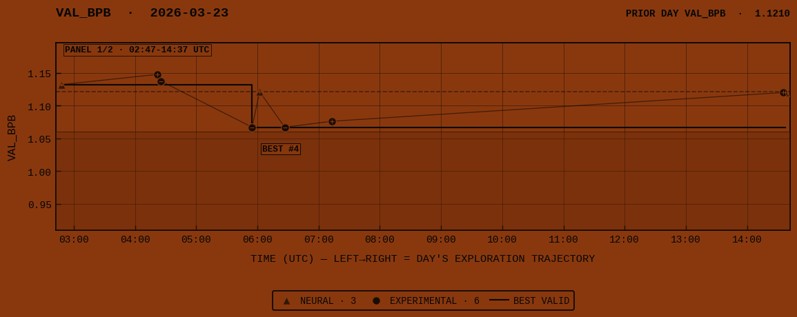
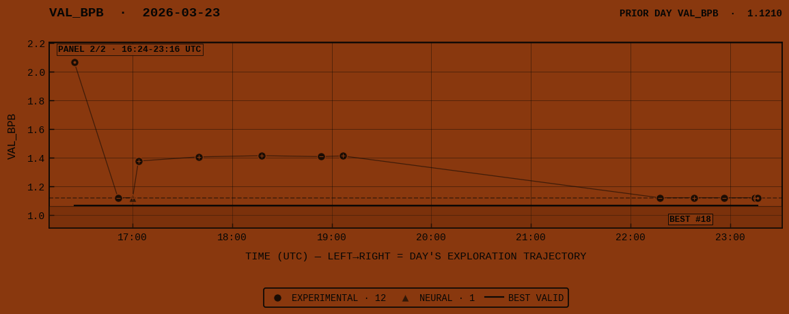

DAILY RESEARCH REPORTBACK TO MASTER SHEET2026-03-23DAILY RESEARCH REPORTBACK TO MASTER SHEET2026-03-23
DAILY RESEARCH REPORTBACK TO MASTER SHEET2026-03-23DAILY RESEARCH REPORTBACK TO MASTER SHEET2026-03-23| 2026-03-23 | 12 | 22 |
{
"date": "2026-03-23",
"fatal": 0,
"headline_metric": "val_bpb",
"raw_records": 658,
"render_records": 568,
"test_rows": 22,
"warnings": 12
}

| VAL_BPB SPREAD | n | min | median | max | download |
|---|---|---|---|---|---|
| LEADERBOARD TRANSFORMER VARIANTS | 11 | 1.0672 | 1.1208 | 1.4138 | — |
| CROSS-SEQUENCE ATTENTION VARIANT | 3 | 1.1208 | 1.1208 | 2.0644 | — |
| STATE-SPACE TTT VARIANT | 2 | 1.1201 | 1.1262 | 1.1322 | — |
| POST-TRAINING QUANTIZATION CALIBRATION | 2 | 1.1206 | 1.1210 | 1.1215 | download |
| RECURSIVE WEIGHT-SHARING TRANSFORMER | 1 | 1.1478 | 1.1478 | 1.1478 | download |
| SLIDING-WINDOW EVALUATION VARIANT | 1 | 1.1377 | 1.1377 | 1.1377 | — |
| COMPACT TRANSFORMER RECIPE | 1 | 1.1207 | 1.1207 | 1.1207 | — |
| CRAWLER ABLATION CONTROL SET | 1 | 1.3766 | 1.3766 | 1.3766 | — |
| ALL VALID | 22 | 1.0672 | 1.1209 | 2.0644 | — |
| # | TIME | HW | ABLATION | VAL_BPB | STATUS | Δ % | OPEN |
|---|---|---|---|---|---|---|---|
| 2 | 04:21 | — | recursive weight-sharing transformer v2: trigram hash + lr_mul compile-spike … | 1.1478 | OK | ↑2.4% | details |
| 3 | 04:25 | — | Freeze run1 scripts — 1.1377 sliding window (broken LR, dim=640) (×2) | 1.1377 | OK | ↑1.5% | details |
| 4 | 05:54 | — | Add AdamW TTT option — PR #462 shows 5x better TTT gain vs SGD (×7) | 1.0672 | OK | ↓4.8% | details |
| 6 | 06:26 | — | SwiGLU + GPTQ: PR #462 architecture with our quant improvements (×6) | 1.0672 | OK | ↓4.8% | details |
| 7 | 07:12 | — | Log session results: 1.0763 SwiGLU (size problem), 1.1215 v7 (submitted) (×6) | 1.0763 | OK | ↓4.0% | details |
| 8 | 14:35 | 8×H100 | run_s1337.log (×3) | 1.1201 | OK | ↓0.1% | training_log 1training_log 2training_log 3 |
| 10 | 16:24 | 1×GB10 | A_bigram1536_xsa11.log | 2.0644 | OK | ↑84.2% | training_log |
| 11 | 16:51 | — | Save Gold Standard (GS): v7 GPTQ 1.1206 BPB — 3 copies (×4) | 1.1206 | OK | ↓0.0% | details |
| 13 | 17:03 | 1×GB10 | S1_loops3_baseline.log | 1.3766 | OK | ↑22.8% | training_log |
| 14 | 17:39 | 1×GB10 | S2_loops4.log | 1.4058 | OK | ↑25.4% | training_log |
| 15 | 18:17 | 1×GB10 | S3_loops5.log | 1.4138 | OK | ↑26.1% | training_log |
| 16 | 18:53 | 1×GB10 | S4_share3_loops4.log | 1.4076 | OK | ↑25.6% | training_log |
| 17 | 19:06 | 1×GB10 | S5_loops4_bigram4096.log | 1.4123 | OK | ↑26.0% | training_log |
| 18 | 22:17 | 8×H100 (runpod) | submit_s1337_20260323_221742.log | 1.1203 | OK | ↓0.1% | training_log |
| 19 | 22:38 | 8×H100 (runpod) | submit_s42_20260323_223824.log | 1.1211 | OK | ↑0.0% | training_log |
| 20 | 22:56 | 8×H100 (runpod) | submit_s7_20260323_225635.log | 1.1205 | OK | ↓0.0% | training_log |
| 21 | 23:15 | — | XSA-11 + GPTQ block64/percdamp002 — 3-seed mean 1.1208 BPB (×2) | 1.1208 | OK | ↓0.0% | details |
| 22 | 23:16 | — | XSA-11 + GPTQ block64/percdamp002 — 3-seed mean val_bpb 1.1208 (×2) | 1.1208 | OK | ↓0.0% | details |
| # | TIME | HW | ABLATION | VAL_BPB | STATUS | Δ % | OPEN |
|---|---|---|---|---|---|---|---|
| 1 | 02:47 | — | Add TTT sweep infra + Vast.ai pipeline + int5mix run record (×2) | 1.1322 | OK | ↑1.0% | details |
| 5 | 06:02 | — | Record: GPTQ + Early QAT + TTT EMA — 3-seed mean val_bpb 1.1215 (×3) | 1.1215 | OK | ↑0.0% | details |
| 9 | 14:37 | — | Record: v7 GPTQ + Short TTT — val_bpb 1.1207 (seed 1337) (×6) | 1.1207 | OK | ↓0.0% | details |
| 12 | 17:00 | — | Log SwiGLU F1 run: 1.1208 BPB (20.6MB, needs compression) (×4) | 1.1208 | OK | ↓0.0% | details |